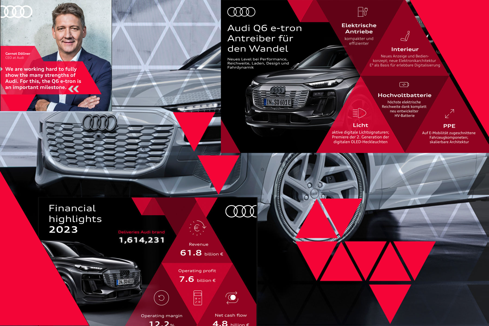

AUDI
Complex business stories, made clear.
Creative leadership for the Audi Annual Media Conference and corporate brand communications — translating strategy, transformation and business content into clear storylines, presentations, infographics and corporate social formats.
View full caseAgency · Palmer HargreavesClient · Audi
